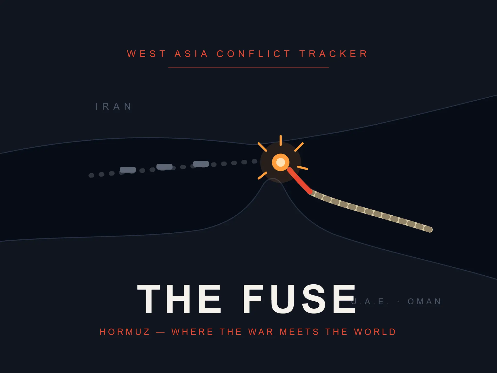

Middle East Conflict Tracker
A real-time tracker of US, Israel, and Iran developments — built to make sense of a fast-moving situation as it unfolds.
middle-east-tracker.vercel.app ↗Business Intelligence & Customer Data Platform Lead, Nissan Motors Europe — Budapest, Hungary
I build the frameworks that let organisations use AI without flying blind. At Nissan Motors Europe, I lead a €1M+ Customer Data Platform programme across ten-plus markets in Europe and the Middle East — and when the company needed to evaluate its first AI-assisted tool with no governance process to fall back on, I built one from nothing: risk classification, a structured sign-off process, a real pilot with human oversight built in throughout. Outside work, I've shipped two live tools that track real-time geopolitical and security developments, built with the same technology I help govern professionally.
Case study
In early 2023, nobody at Nissan's European operations was using general-purpose AI in any formal capacity. The EU AI Act was still being drafted, so there was no external framework to simply adopt — and internally, there was nothing either. A colleague and I were the first at Nissan Europe to seriously look at how general-purpose AI could actually be used inside the business, and I ended up as the decision-maker on what became a genuine build-from-nothing project: figuring out not just whether AI could help, but how to govern it responsibly before anyone used it for anything real.
The skepticism we ran into wasn't narrow — it was about everything. Could Nissan actually be more effective using general-purpose AI, or would it just be an expensive experiment? Could the company's data stay protected if a third-party AI tool touched any of it? And critically, how would anyone verify what the AI produced without either turning it into a black box or making a human check every single output, defeating the point of using it at all. We worked through all three from scratch, with no existing Nissan precedent to lean on.
The hardest decision was where to draw the line on risk. We settled on a simple, firm principle: anything that exposed personally identifiable information, dealer or vendor identities, or VIN numbers was high risk and off-limits for the kind of AI use we were evaluating. General, non-identifying content — the kind that could be personalised per vendor without exposing who that vendor actually was — sat in the low-risk category we were willing to build on. That distinction became the backbone of the governance framework, and everything we evaluated afterward was measured against it.
The concrete use case we took from framework to pilot was an AI-assisted contract drafting tool for HR and legal. It took two to three months of genuinely continuous work to get there — not because the tool itself was complex, but because this wasn't the only thing either of us was working on. We kept human verification built into the workflow throughout, rather than letting the tool run unsupervised, directly addressing the output-verification concern that had been raised early on.
Getting sign-off from a Director and the SVP Europe wasn't the end of the work — it was the point where we had to push. I pushed the team to move with real urgency, not because anyone was dragging their feet, but because the landscape around AI was shifting fast, and sitting on a validated framework without acting on it meant falling behind while everyone else caught up. Once that push happened and the framework was solid, implementation moved to the team in France. I moved on to a larger programme shortly after and don't have direct visibility into how adoption played out from there — that part of the story belongs to the people who carried it forward.
What I took from this wasn't a finished, measurable outcome I can point to with a number. It was the experience of building governance for something genuinely new, with real stakes and real skepticism, and getting it to a point where senior leadership trusted it enough to sign off and hand it to a team to run with.
Live projects
Two tools built hands-on, end to end — the same kind of AI technology I evaluate professionally, applied here to track real-world security and geopolitical developments.

A real-time tracker of US, Israel, and Iran developments — built to make sense of a fast-moving situation as it unfolds.
middle-east-tracker.vercel.app ↗A companion dashboard tracking defense and intelligence developments, built the same way — hands-on, end to end.
defense-intel-dashboard.vercel.app ↗Writing
A running series on LinkedIn, built through an Obsidian-based research and writing pipeline. A few pieces worth starting with:
On algorithmic decision-making rules meeting collective bargaining.
On the geopolitics of AI policy, and what a "kill switch" would actually mean.
On democratic governance trying to keep pace with AI development.
Experience
Nissan Motors Europe, Budapest, Hungary
Own a €1M+ Customer Data Platform programme across ten-plus markets in Europe and the Middle East. Built the company's AI governance framework from scratch for its first AI-assisted contract drafting tool. Hands-on with OneTrust, GDPR, and the EU AI Act. Built automated Tableau reporting that cut manual effort by 30%, directly managed a Tableau Developer and a Junior Business Analyst, and trained 20+ colleagues in SQL and self-service analytics.
Deloitte Consulting, Budapest, Hungary
Delivered CRM and data transformation engagements for BMW and other clients. Applied Salesforce Einstein AI forecasting models on client engagements. Supported Deloitte Canada's COVID-19 vaccine distribution programme on Salesforce CRM. Automated reporting pipelines with Tableau Prep and ETL workflows, cutting manual effort by over 70%.
Hertie School, Berlin, Germany
Eötvös Loránd University (ELTE), Budapest, Hungary
VIT University, Vellore, India
Get in touch
Open to conversations on programme management, data governance, and AI governance roles.